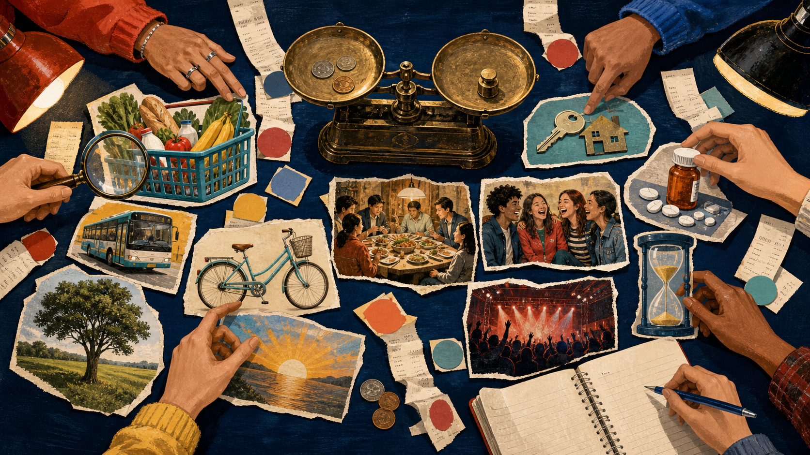

What is valuable? What has a price? Build the strongest balanced case.
Opening bid
Which small thing makes a day feel richer?
Choose one. Tell a partner: "It makes my day better because..." Imaginary answers are welcome.
Your opening bid will appear here.
Bridge from Lesson 12
If you had $1,000, where would the value go?
Choose one first. Then make a second conditional sentence and add a reason.
Bid formula
If I had $1,000, I would ... because...
Silent position
Can money buy happiness?
Choose your starting position. You may move after hearing stronger evidence.
No position is "the correct answer."
Today's mission
Four moves will make your voice stronger.
01
Inspect
Separate needs, wants and wellbeing.
02
Build
Connect a claim, reason and example.
03
Respond
Agree or disagree without attacking.
04
Revise
Use evidence to improve your position.
Visual inquiry
What can money buy, support, or never guarantee?
Tap one area. Describe two details and make one careful claim.
Look first. Then choose a lot.
Vocabulary
Six words change the quality of the debate.
Tap, read aloud, then make a new example with the word.
Catalog opened: 0 / 6.
Pronunciation booth
Hear the rhythm. Repeat with a clear stress.
Play one model. Repeat the word, then repeat the example sentence.
Choose an audio model.
Value sort
Need, want, or both?
Tap each item to cycle: NEED -> WANT -> BOTH. Defend one difficult choice.
Sorted: 0 / 9.
Debate language
Build, connect, and challenge ideas.
Open each catalog tab. Select one phrase and complete it aloud.
Choose language that challenges the idea, not the person.
Evidence types
What kind of support is it?
A bus ticket costs more than last year.
Money is the most important thing.
My cousin felt calmer after she got a job.
Everyone with money is happy.
Select a category, then tap its matching statement.
Matches: 0 / 4.
Argument workshop
A bid becomes believable in three moves.
Claim
Money can support some happiness.
+
Reason
It can reduce stress around basic needs.
+
Example
A safe home can help a family feel secure.
Claim + reason + example = an argument people can follow.
Read the model. Replace one part to create a new argument.
Precision game
Which claim is careful enough to defend?
Choose the strongest claim. Explain why can and when make it more believable.
One claim can survive questions. Find it.
Pre-listening
Two good Saturdays. Two different kinds of value.
Select two predictions. Listen to confirm or revise them.
Predictions selected: 0 / 2.
Listening story
Where does each good feeling come from?
Sam worked at a cafe for three hours. He saved money and bought second-hand headphones. He felt proud because he had earned them. Lina cooked with her aunt, played football with friends and called her grandmother. She spent almost no money, but she laughed a lot. Both teenagers said their Saturday was good.
First listen: identify each source of happiness. Second listen: note one money benefit and one non-money benefit.
Listening check
Choose the answer the story supports.
Why was Sam proud?
What did Lina spend?
What is the message?
Answer alone, compare with a partner, then tap.
Accurate answers: 0 / 3.
Evidence auction
Useful evidence, weak evidence, or a question?

Open three clues. For each, say: useful, limited, or needs a question.
Evidence inspected: 0 / 5.
Team FOR
Money can buy or support some happiness.
Choose two reasons. Add one example and one limit: "However, money cannot..."
Select two evidence cards. Prepare an opener and a balanced final sentence.
Team AGAINST
Money cannot buy every important kind of happiness.
Choose two reasons. Add one example and one concession: "Of course, money is important for..."
Select two evidence cards. Prepare a respectful response to the FOR team.
Balance the scale
Can both teams be partly right?
Money can...
meet needs, reduce some stress and create choices.
Money cannot guarantee...
trust, health, time, purpose or strong relationships.
Work in pairs. Combine both sides into one balanced conclusion.
"Money can support happiness, but it cannot create every kind of happiness."
45-second rehearsal
Speak. Respond. Switch.
Speaker A gives a claim, reason and example. Speaker B uses a respectful reply. Then switch.